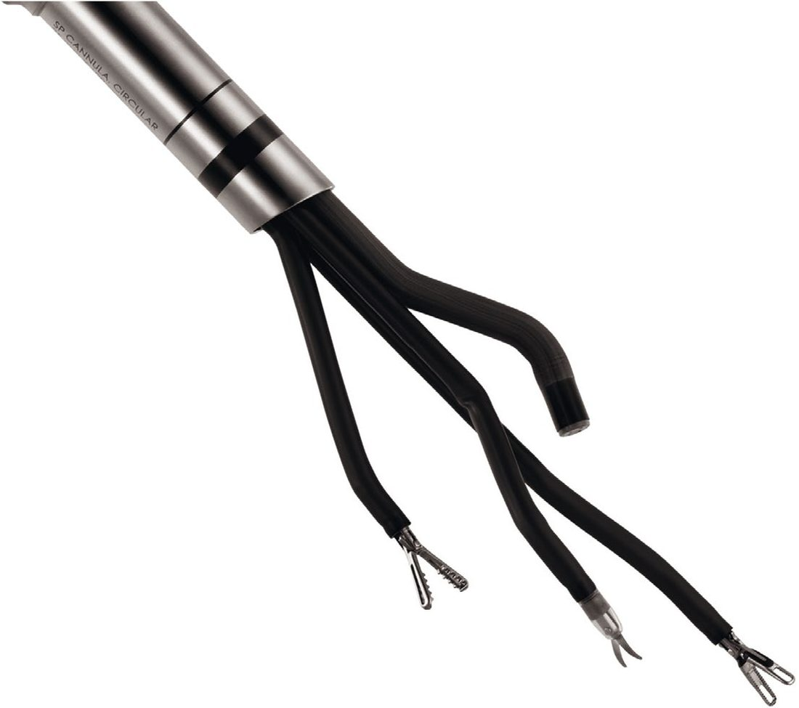
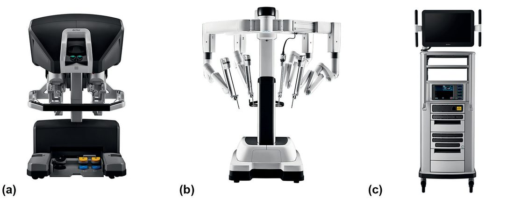
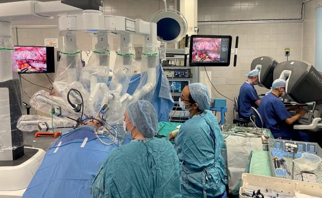
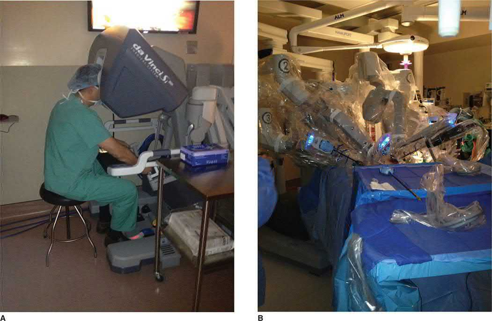

Robotic Surgery
Summary
- Robotic surgery uses computer-integrated telemanipulator platforms, dominated clinically by the da Vinci Surgical System, to overcome the ergonomic and technical limitations of straight-stick laparoscopy while retaining the benefits of minimal access surgery [1][2].
- The surgeon operates from a console remote from the patient, controlling robotic arms that hold a 3D camera and wristed instruments, gaining tremor filtration, motion scaling, and up to seven degrees of instrument articulation [1][2].
- The technology originated from a NASA/DARPA telesurgery project intended to allow remote care of astronauts and soldiers, and has since been adopted across general, urologic, gynaecologic, thoracic, and other surgical specialties [2].
Definition
- "A robot is a mechanical device that performs automated physical tasks according to direct human supervision, a predefined program or a set of general guidelines, using artificial intelligence (AI) technology" [1].
- Robotic surgery is "the utilization of specifically designed robotic surgical platforms to perform minimally invasive surgical procedures" [2].
- Two main categories exist: teleoperated (master-slave) systems, where the surgeon (master) operates a robot (slave) via a televisual computerised platform, potentially remotely; and active or semiactive systems, which are image-guided or pre-programmed, completing surgical tasks with or without concurrent surgeon control [1].
Pathophysiology
Not covered in source textbooks as a distinct heading, robotic surgery is a technology/technique rather than a disease process. As with laparoscopy, robotic abdominal procedures depend on pneumoperitoneum and its associated physiological effects (see Laparoscopic Principles), and carbon dioxide insufflation of the chest and abdomen during minimal access approaches (including robotic) may provoke cardiac arrhythmias, so severe chronic obstructive airways disease and ischaemic heart disease may be contraindications [1].
Clinical features
Not covered in source textbooks, not applicable to a surgical technique. Preoperative assessment focuses on overall fitness (cardiac arrhythmia, lung function), previous surgery/adhesions, body habitus (obesity or a particularly low BMI presents port placement challenges especially with robotic approaches), coagulation status, and thromboprophylaxis needs [1].
Etiology
Not covered in source textbooks, not applicable to a surgical technology.
Diagnosis
Not covered in source textbooks, not applicable; robotic platforms are therapeutic/operative tools rather than diagnostic modalities, though intraoperative near-infrared fluorescence imaging on the da Vinci platform can delineate lymph nodes, lymphatic drainage, blood vessels, and the biliary tree during a procedure [2].
Scoring and Severity
Not covered in source textbooks.
Treatment and Management
- History and evolution: The first documented clinical robotic procedure was a CT-guided brain biopsy in 1985 using the PUMA 560 system, followed by ROBODOC for hip replacement [1].
- Computer Motion's AESOP system (1992) mounted a voice-controlled camera on a robotic arm; the ZEUS system (1996) added master-slave teleoperated instrument arms with motion scaling and tremor correction and was used for the first fully endoscopic robotic procedure (Fallopian tube reanastomosis, 1998) and the first remote telesurgical procedure (a cholecystectomy performed on a patient in Strasbourg by a surgeon in New York in 2001, using the ZEUS system) [1][2].
- The da Vinci system, FDA-approved in 2000 (S System), has since been upgraded through the S (2006), Si (2009), and Xi (2014) generations, with a single-port system (da Vinci SP) more recently introduced [1][2].

System design: The da Vinci system comprises a surgeon console and a patient-side cart; trocars and instruments (including the camera) attach to robotic arms on the cart, and the surgeon, seated at the console, controls up to four arms using bilateral hand and foot controls [2]. An assistant at the bedside exchanges instruments, cleans the camera lens, suctions, and helps create exposure; the more complex the operation, the more experienced this bedside assistant should be [2].


Advantages over open surgery: smaller incisions, less blood loss, shorter hospital stay, decreased pain, decreased surgical site infections, decreased systemic complications, decreased incisional hernia rates, earlier return to daily activities, and improved cosmetic outcome [2].
- Advantages over laparoscopy: For the surgeon, 3D magnified high-definition view (up to 10x magnification, camera angulation up to 30 degrees), control of up to four arms, improved ergonomics (seated console position), a shorter learning curve, and improved accuracy/precision of dissection via EndoWrist instruments offering seven degrees of articulation versus three in the human wrist [1][2].
- For the patient, less intraoperative blood loss and improved procedure-specific short-term outcomes, such as lower oesophageal perforation in Heller myotomy and lower conversion rate in total mesorectal excision (TME) [2].
- Robotic tremor filtering and motion scaling allow large external hand movements to be scaled down to fine internal movements, enhancing precision, and the enclosed console provides isolation from external distractions (at the cost of reduced awareness of team non-verbal communication) [1][2].
- TilePro allows simultaneous multidisplay viewing of intraoperative ultrasound, endoscopy, or preoperative radiology during the procedure [2].

- Disadvantages: Longer operative time, additional training requirements, and higher cost compared with laparoscopy [1][2].
- Consumable costs remain high despite upscaling across specialties, and while robotic surgery can reduce hospital stay versus open surgery, it is difficult to demonstrate a significant length-of-stay or outcome improvement over other minimally invasive alternatives [1].
- One retrospective analysis found that costs of robotic surgery decrease as procedure volume grows at a centre but are unlikely ever to converge with laparoscopic costs [4].
Other platforms: The REVO-I (Meere, Korea, licensed 2017) is a four-arm cart-mounted system with 3D-HD vision via glasses; the Versius (CMR Surgical, CE-marked 2019) uses individual modular cart-mounted arms configured per procedure, mimicking a human arm; the Senhance system (CE-marked 2016) uses independent robotic arms with reusable non-wristed instruments through standard laparoscopic trocars to reduce cost while retaining familiarity with conventional laparoscopy; the Medtronic Hugo RAS system is a lower-cost modular alternative launched in 2019 [1].
Surgeries
Robotic general surgical procedures reported for foregut/upper abdominal disease include Heller myotomy, antireflux surgery (e.g., Nissen fundoplication), bariatric surgery (Roux-en-Y gastric bypass, sleeve gastrectomy), radical gastrectomy (subtotal, total, D2 lymphadenectomy), and splenectomy; hepatopancreaticobiliary operations include liver resection, pancreatic resections (pancreaticoduodenectomy, central/distal pancreatectomy, portal vein reconstruction), and cholecystectomy; colorectal operations include right/left colectomy, low anterior resection, abdominoperineal resection, and total mesorectal excision; other procedures include inguinal, ventral incisional, and hiatal hernia repair and thyroidectomy [2].
Robotic Heller myotomy: the robotic platform enables precise dissection of the oesophageal muscle layers; laparoscopic Heller myotomy carries a 5-10% oesophageal perforation rate, whereas robotic series report 0% perforation (e.g., 104 patients in one series; a multi-institutional comparison found 0% robotic versus 16% laparoscopic perforation), attributed to enhanced visualisation and instrument control, with operative times converging to laparoscopic levels with increasing experience [2].
Robotic gastrectomy with D2 lymphadenectomy: open/laparoscopic D2 lymphadenectomy for gastric cancer requires fine dissection around the hepatoduodenal ligament, coeliac axis, and splenic vessels, with a laparoscopic learning curve plateauing over 50 cases; the robotic platform's four-arm control (steady camera, independent retraction arm, two articulating working arms) and superior visualisation are proposed to shorten this learning curve [2].
Robotic total mesorectal excision (TME) / proctectomy: EndoWrist articulation facilitates dissection and suturing in the narrow male pelvis, an area technically difficult with laparoscopy; nonrandomized case-control studies found a decreased conversion-to-open rate with robotic-assisted proctectomy compared with laparoscopic, with similar overall outcomes [2][5].
Robotic inguinal hernia repair: retrospective data comparing robotic-assisted to laparoscopic repair have been mixed, with some studies showing longer operative time and higher cost; a single-institution retrospective study found reduced complication rates with robotic-assisted repair compared with open repair in obese patients (10.8% vs 3.2%, matched for preoperative risk); single-surgeon survey data suggest excellent long-term (36-month) quality-of-life outcomes after robotic-assisted TAPP repair [4].
Robotic prostatectomy (urology) is, to date, the only operation demonstrated to have better outcomes with the robotic approach compared with laparoscopic or open techniques, attributed to improved visualisation and preservation of the pelvic nerves responsible for erectile function [6].
Complications
- Robotic surgery shares the general complications of minimal access surgery associated with pneumoperitoneum and access (see Laparoscopic Principles) [7].
- Specific disadvantages that translate into risk include longer operative time (itself associated with increased venous thromboembolism and respiratory/wound complication risk) and the learning curve required to achieve competence [1][2].
- The robotic team must carefully rehearse protocols for both controlled and uncontrolled conversion to open surgery in the event of an emergency, given the physical separation of the surgeon from the patient at the console [1].
- Reduced awareness of non-verbal communication from the enclosed console system is a recognised limitation requiring team training and regular verbal cues [1].
Prognosis
- Robotic gastrointestinal operations demonstrate safety and feasibility with minimally invasive benefits comparable to or exceeding laparoscopy in specific procedures, though robotic surgery "has not yet demonstrated any substantial improvement in clinical outcomes when compared to laparoscopy in general" [2].
- Early studies suggest equivalence between robotic and laparoscopic/hand-assisted laparoscopic resections for colorectal disease, though long-term oncologic superiority has not been established, and laparoscopic/robotic TME for rectal cancer may not always be appropriate [6].
- Robotic prostatectomy remains the only operation with demonstrated superior outcomes over laparoscopic or open approaches [6].
References
- Bailey & Love's Short Practice of Surgery, 28th ed., Ch. 10
- Maingot's Abdominal Operations, 13th ed., Ch. 8
- Sabiston Textbook of Surgery, 22nd ed., Ch. 10
- Schwartz's Principles of Surgery: ABSITE and Board Review, Ch. 37
- Schwartz's Principles of Surgery: ABSITE and Board Review, Ch. 7 [10-Robotics reference]
- Schwartz's Principles of Surgery: ABSITE and Board Review, Ch. 14
- Bailey & Love's Short Practice of Surgery, 28th ed., Ch. 7; Ch. 10